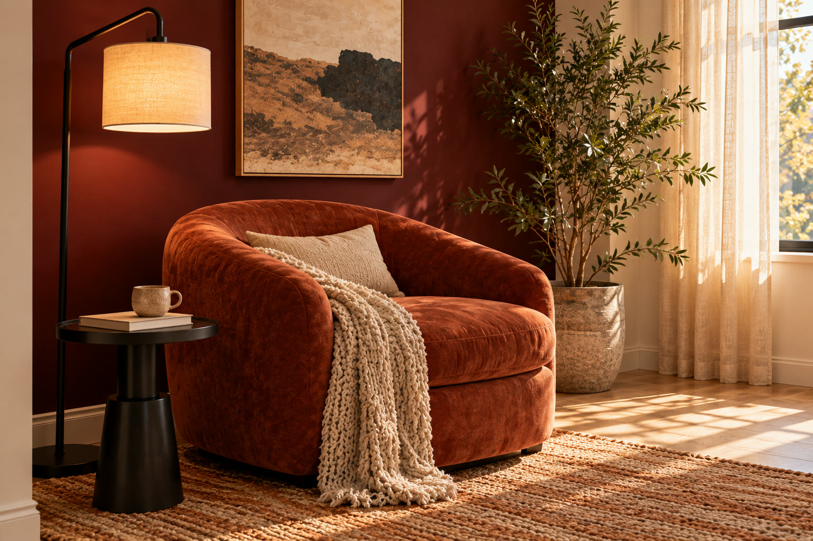
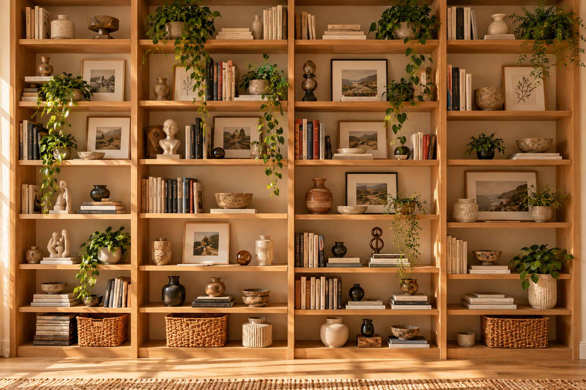
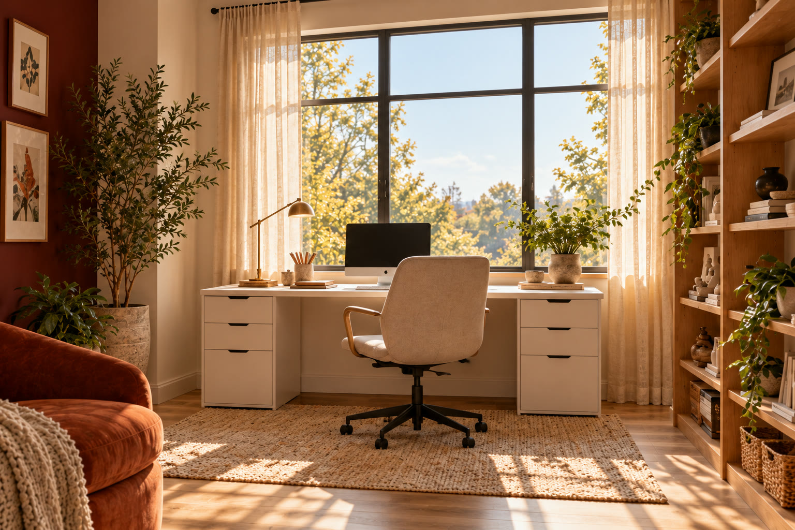

01
Read
A rust-colored chair, black floor lamp, and burgundy wall create an intimate pause.
02 · 3D environment / spatial study
A bright, warm workspace organized around three acts: reading, collecting, and making.

The concept
The studio pairs a deep burgundy reading wall with a soft cream envelope, warm oak display shelves, and a white desk positioned beneath a generous window. It is sophisticated but not formal—a personal gallery that still works as an everyday room.
Sunlight is the organizing material. It connects the reading chair, collection wall, and work surface while giving every texture a clear role.
Spatial system
A rust-colored chair, black floor lamp, and burgundy wall create an intimate pause.
Oak shelves turn books, art, pottery, and handmade objects into a personal archive.
A clean white desk beneath the window keeps the brightest area focused and flexible.



Spatial walkthrough
A short, silent sequence assembled from the final environment views. Playback is always visitor-controlled.
Refinement method
Burgundy, cream, white, warm oak, terracotta, and black metal.
One statement chair, one reading lamp, one desk, one neutral office chair.
Overview, reading detail, collection detail, and work-zone detail.
Match light direction, material temperature, scale, and spatial relationships.
Reflection
“The studio became believable when every view stopped trying to be a new room and started revealing another part of the same one.”